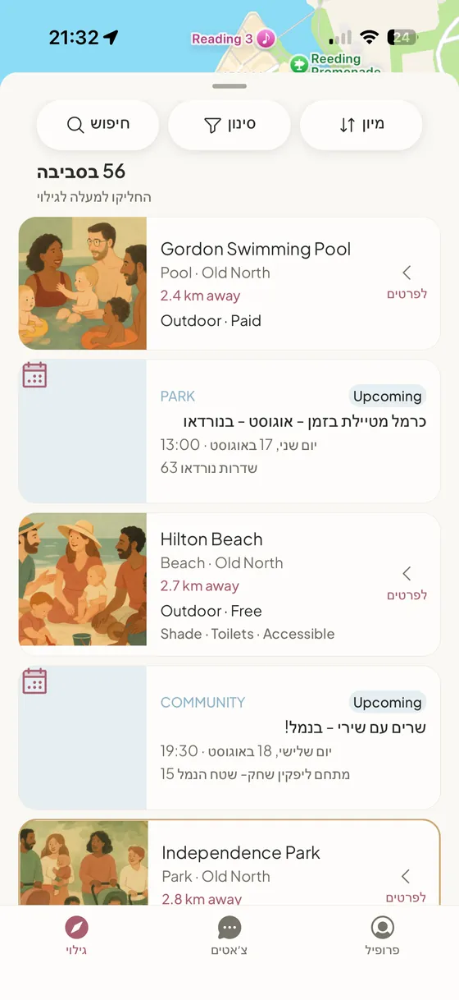
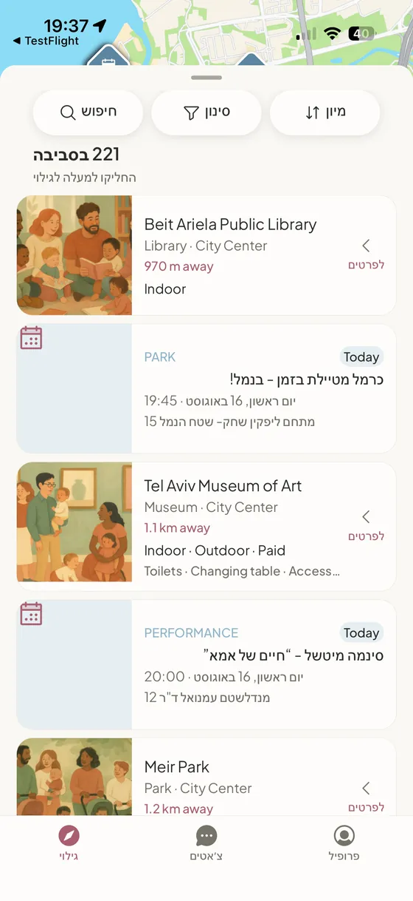
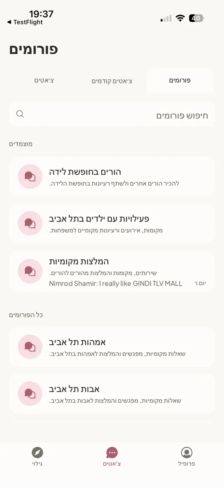

מתחילים בתל אביב־יפו
הקהילה שלך קרובה יותר
ממה שנדמה לך.
הורים, פעילויות, מקומות ואירועים למשפחות — ממש ליד הבית.
בחינם · לאייפון

האפליקציה
מה קורה לידך, ומי כבר מגיע.

הכול במרחק הליכה
גינות, ספריות, חופים ואירועים למשפחות — לפי מה שקרוב אליכם עכשיו, לא לפי מה שפרסמו הכי הרבה.

שכונתי, לא גלובלי
פורומים של הורים מהעיר — לשאלות שעדיף לשאול עליהן שכנה, ולא מנוע חיפוש.

הקהילה שלך כבר כאן.
אנחנו פותחים את הפיילוט בתל אביב־יפו. השאירו אימייל ונעדכן אתכם ברגע שנפתח.
בלי ספאם. רק ההזמנה, כשמגיע התור שלכם.